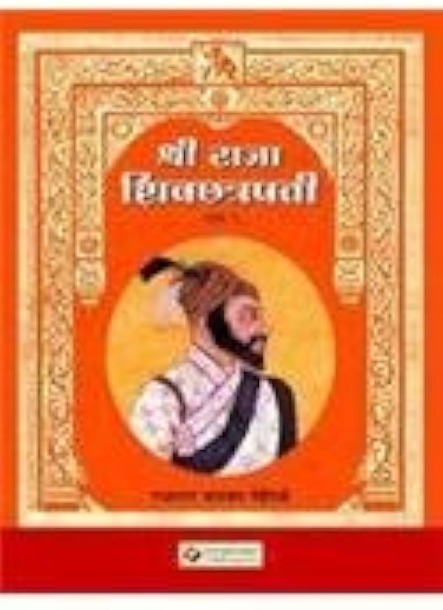

"Raja ShivChatrapati" is a celebrated two-part Marathi historical novel by renowned writer Babasaheb Purandare, chronicling the life and times of Chhatrapati Shivaji Maharaj,
the founder of the Maratha Empire. Published in 1959, the book has become a seminal work on Shivaji's legacy.
The novel is divided into two parts:
Purvardha (First Half): This part covers Shivaji's early life, from his birth at Shivneri fort to his coronation as the Chhatrapati (Emperor) of the Maratha kingdom in 1674.
It depicts his childhood, education under the tutelage of Dadoji Konddev, and his initial military campaigns against the Adilshahi and Mughal empires.
Uttarardha (Second Half): The second part focuses on the later years of Shivaji's reign, including his administration, diplomacy, and further military victories. It also
covers his relations with the Mughal emperor Aurangzeb and the eventual establishment of the Maratha Empire.
Purandare's narrative style combines historical facts with dramatic elements, making the book an engaging read. He portrays Shivaji as a multifaceted leader - a skilled
military strategist, an able administrator, and a champion of Hindu pride. The book also highlights Shivaji's relationships with key figures such as his mother Jijabai,
his wife Saibai, and his trusted generals like Baji Prabhu Deshpande.
"Raja ShivChatrapati" has been widely acclaimed for its meticulous research, vivid descriptions, and insightful analysis of Shivaji's life and legacy. The book has been
translated into several languages and has inspired numerous plays, films, and television adaptations. It remains one of the most popular and influential works on Chhatrapati
Shivaji Maharaj, cementing Purandaile://re's reputation as a preeminent chronicler of Maratha history.